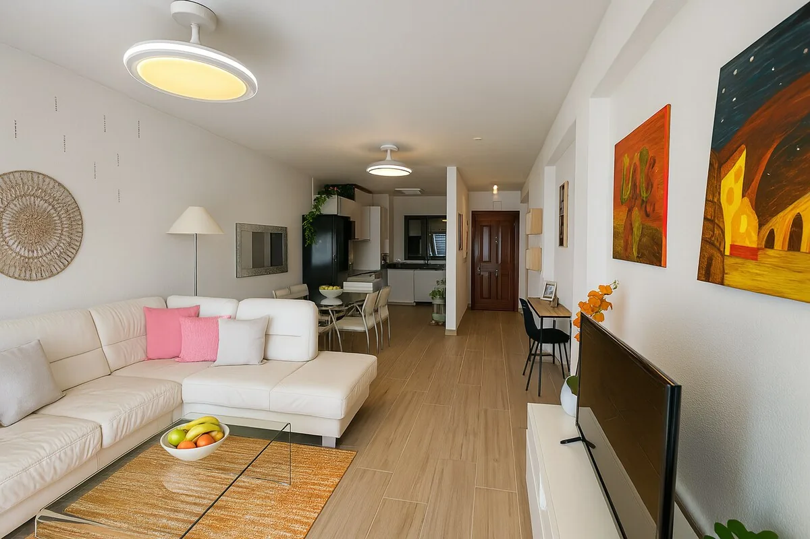
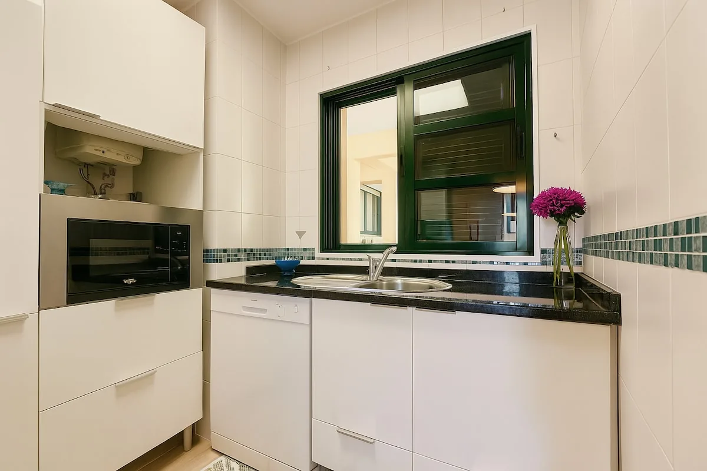
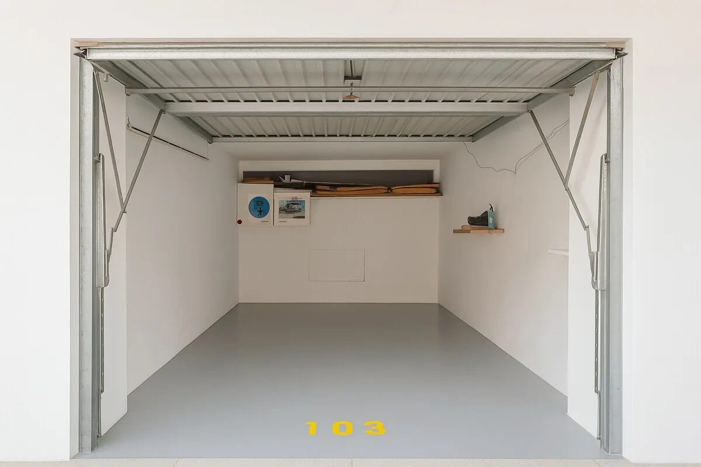
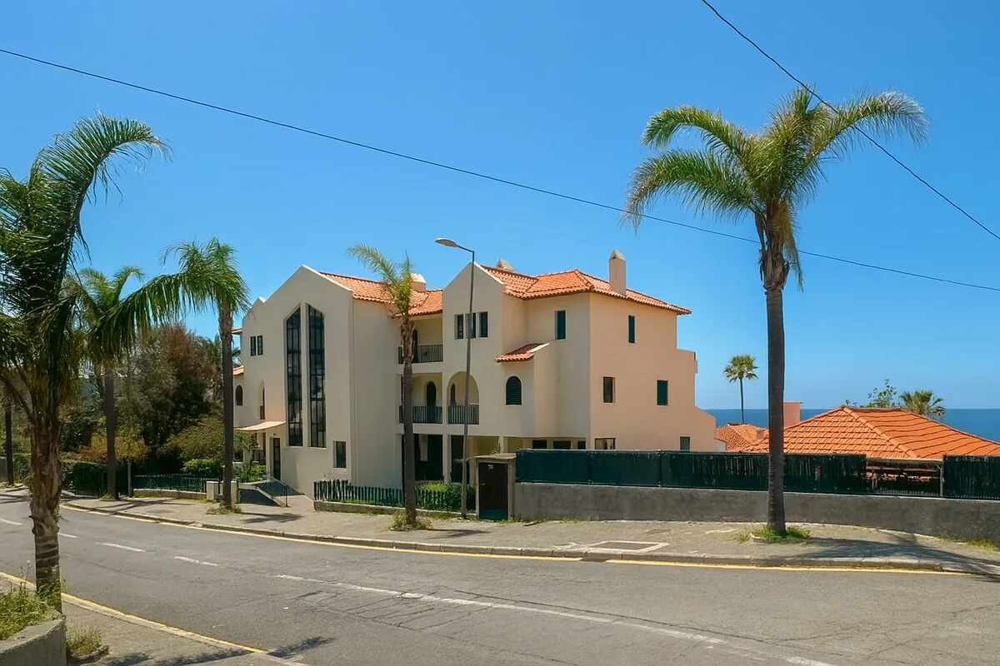

Ola7 years on Airbnb
Airbnb
Everything was good. Very nice people to stay with :)
Above Praia Formosa, Funchal



 Show all 13 photos
Show all 13 photos







A bright, quiet two-bedroom flat on the cliff above Praia Formosa and the Gomes natural pools. It sleeps three, has a terrace of its own, a desk to work at, and free parking on site, which is not a given on this side of Funchal.
The flat comes with its own space. Few places nearby can say that.
Praia Formosa and the Gomes natural pools are down the hill; guests have shared beach access.
There is a proper workspace, so a week here can include a working day.
16 amenities are listed in full on Airbnb.
Guest reviews
Airbnb scores, out of 5
Everything was good. Very nice people to stay with :)
We spent our summer vacation here with our young son, and the apartment was really great!
The great big terrace was our highlight. When we were in the apartment, we actually just spent our time there. We brought a small paddling pool for our son, so everyone got their money's worth. We can really recommend that. The large awning over the terrace was perfect for that (and everything else)! In the afternoon, the sun shines directly on the terrace, so we were able to find shade under the awning. So it was really pleasant. 😊☀️
The location is really great. You can walk to the beach quite quickly, and restaurants and shops are also within easy walking distance.
There are ceiling fans in every room except the bathroom, but no air conditioning. Therefore, it was very warm in the bedroom (September).
Parking was very easy thanks to the underground parking garage, the courtyard and nearby parking lots. And the washing machine was helpful, too! 😊
Wir haben unseren Sommerurlaub mit unserem kleinen Sohn hier verbracht und die Wohnung war wirklich top!
Die tolle große Terrasse war unser Highlight. Wenn wir in der Wohnung waren, dann haben wir die Zeit eigentlich nur dort verbracht. Wir hatten ein kleines Planschbecken für unseren Sohn dabei, sodass alle auf ihre Kosten kamen - das können wir echt empfehlen. Die große Markise über der Terrasse war dafür (und auch sonst) perfekt! Nachmittags scheint die Sonne direkt auf die Terrasse, sodass wir unter der Markise Schatten finden konnten. So war es richtig angenehm 😊☀️
Die Lage ist wirklich top. Man ist zu Fuß recht schnell am Strand und auch Restaurants und Einkaufsmöglichkeiten sind fußläufig gut erreichbar.
Es gibt Deckenventilatoren in jedem Zimmer außer im Bad, aber keine Klimaanlage. Im Schlafzimmer war es daher sehr warm (September).
Das Parken war durch die Tiefgarage, den Hof und nahegelegene Parkplätze sehr einfach. Und die Waschmaschine war auch hilfreich! 😊
Beautiful, quiet apartment with a beautiful terrace overlooking the sea. Has all the comforts. Close to the supermarket, the beach and lots of good restaurants. Great host, I recommend it!
Superbe appartement au calme avec une très belle terrasse vue sur mer. Dispose de tout le confort. Proche du supermarché, de la plage et de pleins de bons restaurant. Super hôte je recommande !
A lovely base from which to explore Madeira, good Funchal bus service, natural pool and restaurant/supermarket access.
A peaceful place to retreat to after days out, sit on the terrace and listen to the waves crashing on the beach below.
The apartment is large, comfortable and has a very nice terrace. We ate there every day, especially breakfast. It faces west, so there is nice shade in the morning. There is no air conditioning, but there is a ceiling fan in every room. I do not stand the heat well, but the fans were perfect and we did not need air conditioning.
There are restaurants nearby, but we preferred the small, simple Portuguese restaurants in central Funchal. You can also walk to the sea, but like everywhere in Madeira, you have to go down and then climb back up, so be mentally prepared! 😊
The apartment is a little outside the centre, but buses run often and the stop is just outside the building.
The bathroom is a little dated and would benefit from a refresh. The hosts are very friendly, always available and gave us useful advice about the island.
A pleasant stay
The apartment is well-equipped and located in a very quiet area near the promenade.
Less good: The bathroom needs renovating.
Ein schöner Aufenthalt
Das Apartment ist gut ausgestattet und liegt sehr ruhig in der Nähe der Promenade.
Less good: Das Bad gehört renoviert.
It was a very nice stay.
Great location, nice and quiet, second row to the sea, sound of the sea included, bus stop right outside, everything easily and quickly accessible. Many thanks to the truly lovely hosts for making the departure to the airport, which you organized, go so smoothly! We felt very comfortable.
Es war sein sehr schöner Aufenthalt.
Super Lage, schön ruhig, 2. Reihe zum Meer, Meeresrauschen inklusive, Bus vor der Tür, alles gut und schnell erreichbar. Vielen Dank an die wirklich sehr netten Gastgeber, dass auch die von euch organisierte Abreise zum Flughafen so gut geklappt hat! Wir haben uns sehr wohl gefühlt.
Communication and the key handover were very good. Good location, close to a bus stop. A space in the garage for the car. Shops nearby. The flat is well equipped and very clean. The bed was comfortable.
Less good: The flat is very noisy, depending on who is in the flats around it. The flat is a little dated overall.
Kommunikation und Schlüsselübergabe war sehr gut Gute Lage, nähe Bushaltestelle Einstellhallenplatz fürs Auto Einkaufsmöglichkeiten in der Nähe Wohnung ist gut ausgestattet und sehr sauber Das Bett war bequem
Less good: Negativ zu erwähnen, ist die extreme hellhörigkeit der Wohnung, je nach Besetzung der umliegenden Wohnungen. Die Wohnung ist insgesamt etwas in die Jahre gekommen.
I stayed at the property with a friend, and we had a wonderful vacation. The apartment is spacious and, with its huge terrace, offers a wonderful vacation feel with a sea view. Having our own garage parking space for the rental car was also super helpful. The only thing was that the house was very noisy.
Natalia welcomed us very warmly and was very easy to reach.
The beach, as well as several restaurants and the natural swimming pool, are within minutes walking distance. A shopping center and grocery stores are also within walking distance. We also enjoyed using the bus stop next door to get downtown.
Also, be sure to visit the Tradicional restaurant directly across from the house. The food is extremely good.
To eat on the outdoor terrace at the restaurant by the natural pool, you absolutely need to make a reservation in advance.
In downtown, we loved “Bar Number Two” (best poncha and caipirinha!!).
Ich war mit einer Freundin in der Unterkunft und wir hatten einen wunderschönen Urlaub. Die Wohnung ist geräumig und bietet mit der riesigen Terrasse ein wunderschönes Urlaubsfeeling mit Meerblick. Super hilfreich war auch der eigene Garagenstellplatz für den Mietwagen. Einzig das Haus war sehr hellhörig.
Natalia hat uns sehr herzlich empfangen und war sehr gut erreichbar.
Der Strand sowie einige Restaurants und das Naturbad sind in wenigen Minuten zu Fuß erreichbar. Ein Einkaufszentrum und Lebensmittelgeschäfte sind ebenfalls zu Fuß erreichbar. Wir haben auch gerne die Bushaltestelle nebenan genutzt, um in die Innenstadt zu kommen.
Besucht auch unbedingt das Tradicional Restaurant direkt gegenüber vom Haus. Das Essen ist extrem gut.
Um beim Restaurant am Naturbad auf der Außenterrasse zu Essen, muss man dringend vorher reservieren.
In der Innenstadt haben wir die "Bar Number Two" geliebt (bester Poncha und Caipirinha!!).
Really nice place to stay and a super friendly host. Great location with lots of restaurants nearby, a lovely terrace, and easy private parking. We’d definitely stay here again!
We had a lovely time at Natalia’s place over Christmas and New Year’s Eve. The terrace is the heart of the apartment, and we spent most of our time there.
The apartment is ideal for two people, but it also works well for three and has super fast internet, which allowed me to comfortably work remotely after the holidays.
Communication with Natalia was always great — she responded quickly and took care of everything. The only small note for people who enjoy cooking a lot: with the available equipment and the stove, cooking can be a bit challenging and may take a little longer. However, this is manageable.
Other than that, everything was wonderful, and I would definitely come back anytime. Thanks for hosting us!🌞🌸
Perfect stay
The apartment is amazing and very well-equipped; you truly have everything you need. The hosts were great as well, with very fast and easy communication. The terrace is beyond beautiful. The location is excellent—really close to the city center, yet you still have your own peaceful spot near the beach. There are plenty of markets and restaurants around, and if we ever come back to Madeira, we would definitely stay here again.
Less good: Everything was great.
Thank you so much for your wonderful feedback. It truly makes us happy to hear that your stay was perfect and that you enjoyed the apartment, the terrace, and the neighborhood.
You were fantastic guests, and communicating with you was really easy.
If you ever come back to Madeira, we’d be delighted to welcome you again.
Natalia & Hugo
Fast and friendly answers, always available even if you leave your key in the apartment :)
Clear check-in and check-out instructions. Great big apartment and beautiful terrace :) happy to come back next time
Schnelle und freundliche Antworten, immer erreichbar auch wenn man mal seinen Schlüssel in der Wohnung liegen lässt :)
Klare Anweisungen für Check-in und out. Tolle große Wohnung und wunderschöner Terasse :) gerne beim nächsten Mal wieder
A very practical location for seeing the island
Terrace with a sea view
Less good: Nothing
Emplacement très pratique pour la visite de l'île
Terrasse avec vue sur mer
Less good: Rien
Bonjour,
Merci infiniment pour votre gentil message et pour avoir tout laissé impeccable, c’est vraiment attentionné.
Je vous souhaite un excellent retour, et ce sera un vrai plaisir de vous revoir un jour sur l’île ! Natalia 🌸
The stay was wonderful as the apartment stays in a good location near the natural pools beach. It was very clean, we had
Location, the apartment and the terrace.
Less good: All was great!
Spectacular terrace
Spectacular terrace with a sea view, a very spacious apartment with every comfort. The garage is very handy too.
Less good: If I had to find a flaw, perhaps the bathroom: the shower is almost impossible to set between hot and cold, and it is a bit worn overall, from the door itself to the shower tray.
Terrazzo spettacolare
Terrazzo spettacolare con vista mare,appartamento molto spazioso e con ogni comfort . Anche il Garage comodissimo.
Less good: Se dovessi trovare una pecca forse il bagno,doccia quasi impossibile da regolare tra acqua calda e fredda e un po’ rovinato in generale dalla porta stessa al piano doccia.
We had 10 wonderful days and were happy with the apartment. The location is very good. Communication and check-in were perfect. Thank you, Natalia!
Wir hatten 10 wunderschöne Tage, waren mit dem Apartment zufrieden. Die Lage ist sehr gut. Kommunikation und check in sind perfekt. Danke an Natalia!
Excellent location, lots of space. A wonderful neighbourhood, full of places for lunch and dinner, and a supermarket too. A short hop from Funchal and the centre. The garage is great to use as well. Very kind owners, ready to help with anything.
Less good: It would be nice to have the flat cleaned at least once every 7 days.
Posizione dell'appartamento ottima, ampi spazi. Vicinato stupendo, molto fornito di locali per cenare e pranzare ma anche supermercato. A due passi da Funchal e dal centro. Inoltre ottimo per l'utilizzo del box auto. Proprietari molto gentili e disponibili per qualsiasi evenienza.
Less good: Sarebbe carino poter usufruire di un servizio di pulizia dell'appartamento minimo 1 volta ogni 7 giorni.
Ciao,
Grazie per il tuo feedback. Siamo felici che tu abbia apprezzato la posizione dell’appartamento, il quartiere e la vicinanza al centro di Funchal. È stato un piacere ospitarti.
Per quanto riguarda il servizio di pulizia durante il soggiorno, ci dispiace ci sia stato un malinteso. Se ce lo avessi richiesto, avremmo potuto organizzarlo senza problemi.
Il prezzo della prenotazione include infatti solo la pulizia finale dopo la partenza, oltre alla gestione della biancheria da letto e da bagno, per garantire un alto standard di pulizia a tutti gli ospiti.
Il servizio di pulizia durante il soggiorno non è incluso, ma può essere organizzato su richiesta anticipata.
Grazie ancora per il tuo soggiorno e per il tuo commento.
Cordiali saluti,
Natália & Hugo
A place you have to discover
Madeira is, without any doubt, a place to discover. Natalia and Hugo's apartment is ideally placed, close to restaurants, shops, bus stops and the famous Lido promenade. The double terrace is more than pleasant, with a view of the ocean, and our hosts told us what to see and what to taste: all the must-dos. I recommend it without any hesitation!
une destination à découvrir absolument
Madère est sans aucune discussion une destination à découvrir. L'appartement de Natalia et Hugo est idéalement situé, proche des restaurants, des commerces, des arrêts de bus, de l'emblématique promenade du Lido. La double terrasse est plus qu'agréable avec une vue sur l'océan, et les hôtes nous ont indiqué les choses à découvrir, à goûter...les incontournables. Je recommande sans aucune hésitation!
Un grand merci à Aude pour son passage ! Elle a été une invitée adorable, respectueuse du lieu et de tout ce qui était mis à disposition. On sent qu’elle prend soin des choses comme si c’était chez elle, ce qui est vraiment précieux. Tout s’est passé avec simplicité et bienveillance. Ce serait un vrai plaisir de l’accueillir à nouveau !
Where you will be
The circle shows the area. The exact address and the way in come with your booking.
Book straight here, and keep what Airbnb would have charged you on top.
Pick your dates